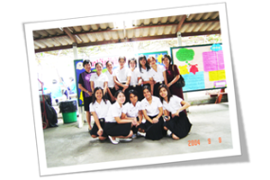

เกี่ยวกับภาควิชา

ประวัติความเป็นมา
ขอต้อนรับสู่ภาควิชาสุขภาพจิตและการพยาบาลจิตเวชศาสตร์
การพยาบาลสุขภาพจิตและจิตเวชเป็นศาสตร์และศิลป์ในการส่งเสริม ป้องกัน บำบัด และฟื้นฟูผู้รับบริการทางด้านสุขภาพจิต เพื่อให้เกิดความสมดุลและความผาสุกในชีวิต
ภาควิชาสุขภาพจิตและการพยาบาลจิตเวชศาสตร์ เดิมเป็นหน่วยการพยาบาลจิตเวชศาสตร์ สังกัดภาควิชาการพยาบาลอายุรศาสตร์และจิตเวชศาสตร์ ต่อมาได้รับอนุมัติแบ่งส่วนราชการเป็นภาควิชาหนึ่งในคณะพยาบาลศาสตร์ ตามประกาศในราชกิจจานุเบกษา ลงวันที่ 6 กุมภาพันธ์ 2529 นับเป็นภาควิชาที่ 7 ของคณะพยาบาลศาสตร์
รายนามหัวหน้าภาควิชา
พ.ศ. 2529 – 2530
นางสาวทัศนา บุญทอง
พ.ศ. 2531 – 2534
นางสมศร เชื้อหิรัญ
พ.ศ. 2535 – 2538
นางพวงเพ็ญ เจียมปัญญารัช
พ.ศ. 2539 – 2542
นางสาววาสนา แฉล้มเขตร
พ.ศ. 2542 – 2546
นางจารุวรรณ ต.สกุล
พ.ศ. 2546 – 2550
นางสาววาสนา แฉล้มเขตร
พ.ศ. 2550 – 2559
นางอติรัตน์ วัฒนไพลิน
พ.ศ. 2559 – 2566
รองศาสตราจารย์ ดร.พวงเพชร เกษรสมุทร
พ.ศ. 2566 – ปัจจุบัน
รองศาสตราจารย์ ดร.นพพร ว่องสิริมาศ